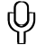

bouton de sourdine associé à chaque piste
dont vous ne voulez pas effectuer le mélange vers la sortie.
bouton de sourdine associé à chaque piste
dont vous ne voulez pas effectuer le mélange vers la sortie.
| [ << ] | [ >> ] | [Top] | [Table des matières] | [Index] | [ ? ] |
Ils sont empilés sous la piste à laquelle ils s'appliquent. Ils appliquent un traitement à la piste lors de sa lecture, sans enregistrement permanent de la sortie sauf lors du rendu final du projet.
Tous les effets en temps réel sont regroupés dans la fenêtre des ressources, séparés en deux groupes : les effets audio et les effets vidéo. Les effets audio doivent être glissés depuis la fenêtre des ressources vers des pistes audio. Les effets vidéo doivent être glissés sur des pistes vidéo.
S'il y a des données sur la piste de destination, l'effet est appliqué à l'ensemble de la piste. S'il n'y a pas de données sur la piste, l'effet est supprimé. Enfin, si une région de la piste est sélectionnée, l'effet est collé sur cette région, qu'il y ait ou non des données présentes sur la piste.
Certains effets ne traitent pas les données mais synthétisent des données. Dans le cas d'un effet de synthèse, il vous faudra sélectionner une région de la piste de façon à ce que, lors de l'opération de glisser, il puisse être collé sans être supprimé.
Si vous glissez plus d'un seul effet sur une piste, ils apparaîtront empilés du haut vers le bas, sous la piste. Lorsque la piste est jouée, les effets sont traités du haut vers le bas. La sortie de l'effet du haut devient l'entrée de l'effet qui se trouve en-dessous et ainsi de suite.
En plus du glisser depuis la fenêtre des ressources, les effets peuvent être appliqués à une piste par l'intermédiaire d'un menu contextuel. Faites un clic droit sur une piste et choisissez Attacher un effet dans le menu. Le dialogue d'attachement de l'effet vous donne davantage de possibilités que le simple glisser-déposer. Il vous permet d'attacher deux types d'effets supplémentaires : les effets partagés et les pistes partagées. Choisissez un greffon depuis la colonne des greffons et cliquez sur Attacher, en-dessous de la colonne des greffons, pour l'attacher. L'effet est le même que s'il avait été glissé depuis la fenêtre des ressources.
Lorsqu'un effet est présent sous une piste, il doit la plupart du temps être configuré. Placez le curseur sur l'effet et effectuez un clic droit pour afficher son menu contextuel. Dans ce menu est présente l'entrée Afficher les options. Celle-çi permet d'afficher l'interface graphique associée à l'effet qui se trouve sous le curseur. La plupart des effets ont une interface graphique, mais pas tous. Si l'effet n'a pas d'interface graphique, vous n'obtiendrez pas de fenêtre d'options lorsque vous cliquerez sur Afficher les options. Lorsque vous ajustez les paramètres dans l'interface graphique, les paramètres affectent normalement toute la durée de l'effet.
Les deux autres types d'effets gérés par le dialogue Attacher un effet sont les effets recyclés. Pour pourvoir utiliser un effet recyclé, trois conditions doivent être remplies :
Dans le cas d'un effet partagé, ces conditions doivent être remplies. Dans le cas d'une piste partagée, il doit y avoir une autre piste sur la timeline, qui soit du même type que la piste à laquelle vous appliquez l'effet. Si vous faites un clic droit sur une piste vidéo pour attacher un effet, il n'y aura rien dans la colonne Pistes partagées s'il n'y a pas d'autre piste vidéo. Si vous faites un clic droit sur une piste audio, il n'y aura rien dans la colonne Pistes partagées s'il n'y a pas d'autre piste audio.
S'il existe des effets partagés ou des pistes partagées, ils apparaîtront dans les colonnes Pistes partagées ou Effets partagés. Le bouton Attacher sous chacune des colonnes permettra d'attacher sous la piste en cours, tout ce qui se trouve en surbrillance dans la colonne.
Les effets partagés et les pistes partagées permettent de réaliser des choses uniques. Dans le cas d'un effet partagé, l'effet partagé est traité comme une copie de l'effet d'origine sauf que vous ne pouvez pas afficher l'interface utilisateur graphique de l'effet. Toute la configuration de l'effet partagé se fera depuis l'interface utilisateur de l'effet d'origine et on ne pourra afficher l'interface utilisateur que pour l'effet d'origine.
Lorsqu'un effet partagé est lu, il effectue le traitement exactement comme un effet normal à l'exception de la configuration qui est copiée depuis l'effet d'origine. Certains effets détectent qu'ils sont partagés, comme l'effet de réverbération ou le compresseur. Ces effets déterminent quelles sont les pistes qui les partagent et soit ils mélangent les deux pistes entre-elles, soit ils utilisent l'une des piste pour déterminer certaines valeurs. La réverbération mélange les pistes pour simuler une ambiance. Le compresseur utilise l'une des pistes partagées comme déclencheur.
Lorsqu'une piste d'origine possède une piste partagée pour l'un de ses effets, la piste partagée elle-même est utilisée comme effet temps réel. C'est souvent appelé piste renvoyée mais Cinelerra permet de réaliser la même opération en attachant des pistes partagées. Le fondu et tous les effets de la piste partagée sont appliqués à la piste d'origine. Une fois que la piste a effectué le traitement des données, la piste d'origine traite tous les effets qui se trouvent sous la piste partagée et les compose ensuite sur la sortie.
De plus, une fois qu'une piste partagée à traité la sortie de la piste
d'origine comme un effet temps réel, la piste partagée se mélange elle-même sur
la sortie avec ses paramètres de panoramique, de mode et de projecteur. De
cette manière, deux pistes effectuent le mélange des mêmes données vers la
sortie. La plupart du temps, vous ne souhaiterez pas que la piste partagée
mélange vers la sortie les mêmes données que la piste d'origine, vous voudrez
qu'elle s'arrête juste avant l'étape de mélange et qu'elle restitue les données
vers la piste d'origine. Ceci est obtenu en activant le
bouton de sourdine associé à chaque piste
dont vous ne voulez pas effectuer le mélange vers la sortie.
Supposons que vous réalisiez une vidéo et que vous désiriez que la piste partagée mixe la piste d'origine vers la sortie une seconde fois. Dans le cas de la vidéo, la vidéo de la piste partagée apparaîtra toujours sous la vidéo de la piste d'origine, indépendamment du fait qu'elle soit au dessus de la piste d'origine. Ceci en raison du fait que les pistes partagées sont mixées dans l'ordre de leur attachement. Comme c'est une partie de la piste d'origine, elle doit être mixée avant que la piste d'origine ne le soit.
Il existe de nombreuses opérations pour manipuler des effets une fois qu'ils ont été déposés sur la timeline. Parce que le mélange des effets et des médias est une chose très compliquée, les méthodes utilisées pour éditer les effets ne sont pas aussi concises que le couper/coller. Certaines opération sont effectuées en glissant les points d'entrée/sortie, certaines par l'intermédiaire de menus, et certaines en glissant des effets.
Normalement, lorsque faites du montage avec des pistes, les effets suivent les décisions de montage. Si vous effectuez un couper sur une piste, l'effet va se raccourcir. Si vous glissez les points d'entrée/sortie, les effets vont voir leur durée varier. Ce comportement peut être désactivé en choisissant configuration-> Editer les effets dans la fenêtre du projet. Ceci découple les effets des opérations de montage, mais comment faire pour ne modifier que les effets ?
Déplacez le curseur de la timeline sur les bords d'un effet jusqu'à ce qu'il change de forme pour s'afficher sous la forme d'une icône de redimensionnement vers la gauche ou vers la droite. Dans cet état, si vous glissez la fin de l'effet, il réalise une opération de montage exactement comme si vous glissiez la fin de la piste.
Les trois comportements de l'ajustement des pistes s'appliquent à l'ajustement des effets et sont liés aux boutons de la souris tels que vous les avez configurés dans les préférences de l'interface utilisateur. Voir la section Interface. Lorsque vous effectuez l'ajustement d'un effet, les limites de l'effet sont déplacées en les glissant. A l'inverse de l'édition des pistes, l'effet n'a pas de dimensions source. Vous pouvez donc étendre la fin d'un effet autant que vous le désirez sans être limité.
De même, à l'inverse de l'édition de pistes, la position de départ d'une opération de glisser ne lie pas la décision de montage au média. Le média auquel est lié l'effet ne suit pas les modifications de l'effet. Les autres effets, cependant, suivent les décisions de montage faites sur cet effet. Si vous glissez la fin d'un effet qui est aligné avec des effets se trouvant sur d'autres pistes, les effets des autres pistes seront modifiés bien que le média reste le même.
Que se passe-t-il si vous ajustez la fin d'un effet en laissant beaucoup de temps non affecté vers la fin de l'effet ? Lorsque vous glissez un effet depuis la fenêtre des ressources, vous pouvez insérer l'effet dans la portion de la ligne non occupée par l'opération d'ajustement. Les effets en temps réel sont organisés en lignes sous la piste. Chaque ligne pouvant comporter plusieurs effets.
Dans certains cas, vous désirerez que l'opération d'ajustement ne change qu'une seule ligne d'effets. Ceci peut être obtenu en plaçant d'abord le point d'insertion au début ou à la fin de l'effet. Pressez ensuite la touche MAJ en commençant l'opération d'ajustement. Ceci permet à l'opération de ne modifier qu'une seule ligne d'effets.
En plus de l'ajustement, vous pouvez déplacer un effet vers le haut ou vers le bas. Chaque piste possède, à sa partie inférieure, une pile contenant les effets. En déplaçant les effets vers le haut ou vers le bas, vous modifiez l'ordre dans lequel ils sont traités sur la pile. Allez sur l'un des effets et faites un clic droit pour afficher le menu de l'effet. Les options Déplacer vers le haut et Déplacer vers le bas déplacent les effets dans la direction souhaitée.
Lorsque vous déplacez des effets vers le haut ou vers le bas, prêtez attention au fait que s'ils sont partagés en tant qu'effets partagés, toutes les références pointeront alors vers un effet différent après l'opération de déplacement.
Enfin, il y a les glisser d'effets. Glisser des effets fonctionne exactement
comme glisser des plans. Vous devez sélectionner la
 flèche pour passer dans le mode
glisser-déposer avant de pouvoir glisser des effets. Les effets se collent aux
limites des médias, aux limites des effets et des pistes. Faites attention si
vous glissez la référence d'un effet partagé, après cela, la référence pointera
habituellement vers le mauvais effet.
flèche pour passer dans le mode
glisser-déposer avant de pouvoir glisser des effets. Les effets se collent aux
limites des médias, aux limites des effets et des pistes. Faites attention si
vous glissez la référence d'un effet partagé, après cela, la référence pointera
habituellement vers le mauvais effet.
Faites un clic droit sur un effet pour afficher le menu de l'effet. Choisissez Remplacer... pour remplacer l'effet ou pour modifier la référence si c'est un effet partagé.

Appliquer audio arrière à une piste audio et lisez-la en sens inverse. Le son sera reproduit normalement.
Soyez conscient, en inversant l'audio, que la forme d'onde sur la timeline ne reflète pas la sortie inversée.

Cet effet lit directement l'audio depuis l'entrée de la carte son. Il remplace toute l'audio de la piste il est donc en général appliqué sur une piste vide.
Afin d'utiliser audio en direct, mettez en surbrillance une zone horizontale d'une piste audio ou placez les points d'entrée et de sortie. Déposez-y ensuite l'effet d'audio en direct. Créez des pistes supplémentaires et attachez à ces autres pistes des copies partagées du premier effet d'audio en direct afin d'enregistrer des canaux supplémentaires.
L'audio en direct utilise le pilote audio sélectionné dans Configuration->Préférences->Lecture->Sortie audio pour enregistrer, mais au contraire le l'acquisition il utilise la taille de tampon en lecture comme tampon d'enregistrement et le taux d'échantillonage du projet comme taux d'échantillonnage.
Ces paramètres sont critiques car certaines cartes son ne peuvent pas enregistrer dans un tampon dimensionné de la même manière que celui dans lequel elle effectuent la restitution. L'audio en direct est plus fiable lorsque le pilote d'enregistrement est ALSA et que la taille de fragment de lecture est de 2048.
Déposez les autres effets après l'effet audio en direct afin de traiter l'entrée de la carte son en temps réel.
Aux mauvaises nouvelles maintenant. Avec l'audio en direct, il n'y a pas d'anticipation, donc des effets tels que le compresseur auront un retard si l'anticipation est activée ou il manquera des données lors de la lecture.
Un autre problème provient du fait que l'horloge de la carte son est parfois légèrement plus lente que l'horloge de la lecture. L'enregistrement sera alors en avance et le son reproduit sera saccadé.
Enfin, l'audio en direct ne fonctionne pas en inverse.

FIXME

FIXME

Au contraire de ce qu'on fait avec les ordinateurs, le compresseur audio ne réduit pas la quantité de données nécessaires pour enregistrer de l'audio sur disque. Le compresseur audio diminue la plage dynamique de l'audio. Dans le cas de Cinelerra, le compresseur remplit à la fois le rôle d'un expanseur et d'un compresseur.
Le compresseur fonctionne en calculant le niveau sonore maximum à l'intérieur d'une certaine période de temps autour de la position actuelle. Le niveau sonore maximum est pris comme niveau sonore d'entrée. Pour chaque niveau sonore d'entrée, il y a un niveau sonore de sortie indiqué par l'utilisateur. Le gain à la position actuelle est ajusté de façon à ce que le niveau sonore maximum dans la plage de temps ait la valeur indiquée par l'utilisateur.
Le compresseur possède une représentation graphique indiquant la corrélation entre la niveau sonore d'entrée et le niveau sonore de sortie. L'axe horizontal est le niveau d'entrée en dB. L'axe vertical représente le niveau de sortie en dB. L'utilisateur indique les niveaux sonores en sortie en créant des points sur le graphique. Cliquez sur le graphique pour créer un point. Si deux points existent, glissez l'un des points sur le second pour l'effacer. La valeur du point le plus récent est affichée dans des boîtes de texte pour permettre un ajustement plus précis.
Pour que le compresseur réduise la dynamique de l'audio, il faut que les valeurs en sortie soient plus grandes que les valeurs en entrée sauf pour 0 dB. Pour que la plage dynamique soit étendue, il faut que toutes les valeurs de sortie, à l'exception du point 0 dB, soient plus faibles que les valeurs d'entrée. L'algorithme limite tous les niveaux sonores au-dessus de 0 dB à 0 dB. Donc, pour à obtenir un effet de saturation, appliquez un effet de gain avant le compresseur pour réduire tous les niveaux et faites-le suivre avec un autre effet de gain qui amplifie tous les niveaux au-dessus de 0 dB.
Temps de réaction : ceci détermine la position à laquelle est prise la valeur maximale par rapport à la position actuelle et la vitesse à laquelle le gain est ajusté pour atteindre cette crête. Il est noté en secondes. S'il est négatif, le compresseur va lire en avant de la position actuelle pour obtenir les crêtes futures. Le gain est affecté d'une rampe vers le maximum de cette durée. Ceci lui permet d'atteindre le niveau désiré en sortie exactement quand la crête d'entrée se produit à la position actuelle.
Si le temps de réaction est positif, le compresseur ne balaie que la position actuelle pour le gain et le gain est affecté d'une rampe de cette durée pour attendre le niveau de sortie désiré. Il atteint le niveau de sortie désiré au moment exact de la détection de la crête en entrée, auquel se rajoute le temps de réaction.
Temps de décroissance : si la crête est plus élevée que le niveau actuel, le compresseur affecte le gain d'une rampe vers la valeur crête. Ensuite, si une crête future est inférieure à la crête actuelle, le gain est affecté d'une rampe décroissante. Le temps pris par la rampe pour atteindre le gain en descendant peut être supérieur au temps pris par la rampe croissante. Il s'agit de ce temps de décroissance de la rampe en secondes.
Type de déclenchement : le compresseur est un effet multicanal. Plusieurs pistes se partagent le même compresseur. La manière dont le signal en provenance de plusieurs pistes est interprété dépend du type de déclenchement.
Le Type de déclenchement utilise la valeur fournie dans la boîte de texte Déclencheur comme numéro de la piste à utiliser en entrée pour le compresseur. Ceci permet à une piste qu'on n'entend pas de déterminer le volume sonore des autres pistes.
Un déclenchement sur le Maximum prend la piste qui donne le niveau sonore le plus élevé et l'utilise en entrée du compresseur.
Un déclenchement sur le Total ajoutera les signaux de toutes les piste et utilisera ce total comme entrée pour le compresseur. C'est la compression qui donne le rendu le plus naturel et c'est l'idéal lorsque l'on fait la moyenne de plusieurs pistes vers un seul haut-parleur.
Déclencheur : le compresseur est un effet multicanal. Plusieurs pistes peuvent partager un même compresseur. Normalement, une seule piste est parcourue à la recherche de la valeur crête. Cette piste est appelée le Déclencheur. En partageant plusieurs pistes et en jouant sur la valeur du déclencheur, vous pouvez faire suivre une onde sinusoïdale sur une piste par un bruit de batterie sur une autre, par exemple.
Lisser seulement : pour afficher ce que fait le compresseur dans les indicateurs de niveau, cette option permet de remplacer l'onde sonore par uniquement la valeur crête actuelle. Il est alors très facile de voir l'action du temps de réaction sur la détection des valeurs de crête.

Comme pour les méthodes d'étirement du temps, il y a trois méthodes de décalage de hauteur : Décalage de hauteur, Rééchantillonner, et le Dialogue des informations de l'objet. Le décalage de hauteur est un effet temps-réel qui peut être glissé et collé sur une piste audio enregistrable. Le décalage de hauteur utilise une transformation rapide de Fourier afin d'essayer de modifier la hauteur sans toucher à la durée, mais ceci introduit des "artefacts de fenêtre".
Parce que les artefacts de fenêtre sont moins obstrusive #FIXME# quand l'audio est décalée en hauteur de manière évidente, le décalage de hauteur est surtout utilisé pour des modifications de hauteur extrêmes. Pour des modifications de hauteur moyennes, utiliser le rééchantillonnage depuis l'interface Audio->Rendu d'effet. Le rééchantillonnage peut modifier la hauteur dans les limites de 5% sans modification notable de la durée.
Une autre manière de modifier légèrement la hauteur est d'aller dans la fenêtre des Resources, de mettre en surbrillance le dossier media, de faire un clic droit sur un fichier audio, puis de cliquer sur Info. Ajustez le taux d'échantillonnage dans le dialogue Info pour ajuster la hauteur. Cette méthode demande aussi d'effectuer un clic gauche sur la limite droite des pistes audio et de glisser cette limite vers la gauche ou vers la droite afin de déterminer la durée de la modification.

FIXME

FIXME
FIXME

FIXME

FIXME

FIXME

FIXME

FIXME

FIXME

Indiquez simplement de combien de secondes vous désirez que la piste audio soit retardée.

FIXME

FIXME

FIXME

FIXME

La plupart des émissions de télévision sont reçues avec une résolution de 1920x1080 mais sont issue d'une source 720x480 au studio. C'est du gaspillage de place que de compresser l'ensemble du 1920x1080 si les détails visibles sont en 720x480. Malheureusement, la retranscription de 1920x1080 vers 720x480 ne se borne pas à une simple réduction.
A la station de télévision, le métrage d'origine en 720x480 est d'abord converti en champs de 720x240. Chaque champ et alors "gonflé" à 1920x540. Les deux champs de 1920x540 sont enfin combinés par entrelacement pour former une image de 1920x1080. Cette technique permet à un téléviseur grand public d'afficher l'image rééchantillonnée sans nécessiter de circuits supplémentaires pour gérer l'entrelacement 720x480 dans une image 1920x1080.
Si vous vous contentez de désentrelacer les images 1920x1080, vous obtiendrez à la fin un niveau de détail correspondant à une résolution de 720x240. L'effet 1080 vers 540 extrait correctement de l'image les deux champs d'une taille de 1920x540, les redimensionne séparément et les recombine pour restaurer l'original de 720x480. L'effet Redimensionner doit alors être appliqué afin de réduire la taille d'origine à 960 ou 720 selon le rapport d'aspect d'origine.
Les pistes auxquelles 1080 vers 540 est appliqué doivent se trouver dans une résolution de 1920x1080. Les paramètres du projet dans Configuration-> format... doivent avoir une résolution d'au moins 720x480.
Cet effet ne sait pas si la première ligne de l'image 1920x1080 correspond à la première ligne dans l'original de 720x480. Vous devez indiquer quelle est la première ligne dans la configuration de l'effet.
La sortie de cet effet est une petite image au centre de l'image originale en 1920x1080. Utilisez le projecteur pour centrer l'image de sortie lors de la lecture.
Enfin, une fois que vous avez obtenu la vidéo entrelacée en 720x480, vous pouvez soit appliquer un effet de trames vers champs ou Télécinéma inverse pour récupérer encore davantage les images progressives d'origine.

Cet effet est celui à utiliser si vous désirez obtenir un aspect de "vieux film" ou d'émission de télévision. Il va ajouter des lignes ondulantes en haut et en bas du film ainsi que de la "neige" sur la vidéo. Utilisez-le conjointement avec Luminosité/Contraste et Equilibre des couleurs afin de faire ressembler votre film à un très vieux film en noir et blanc.

Cet effet rend floue une piste vidéo. Ses paramètres sont :

Si vous désirez éclaircir une prise de vue sombre, ou ajouter de la lumière, cet effet est fait pour vous. N'utilisez pas trop cet effet ou bien vous risquez de dégrader la qualité de votre vidéo. Utilisez-le avec les images-clé afin d'éclaircir une longue prise de vue qui est trop sombre au début mais claire à la fin. Généralement, vous devrez modifier la luminosité et le contraste dans des proportions équivalentes (par exemple, luminosité 28 contraste 26) de manière à ce que vos couleurs d'origine demeurent intactes.

L'effet de brûlage vidéo fait "brûler" votre vidéo lorsqu'il y a de petits éléments lumineux et colorés dans la vidéo, sur les bords d'un T-shirt par exemple. Ce peut être un très bon élément dans une vidéo musicale ou juste un bon moyen de libérer votre imagination.

Cet effet efface tous les pixels qui correspondent à une certaine couleur. Ils sont remplacés par du noir s'il n'y a pas de canal alpha et par de la transparence s'il y a un canal alpha. Le choix du modèle colorimétrique est important pour en déterminer le comportement.
La clé chromatique utilise soit la luminosité soit la teinte pour définir ce qui sera effacé. Utiliser la valeur permet de n'utiliser que la valeur pour déterminer la transparence. Choisissez la couleur centrale à effacer en utilisant le bouton Couleur. Vous pouvez aussi sélectionner directement une couleur dans l'image depuis la fenêtre de composition à l'aide de la Pipette à couleurs et en cliquant le bouton Utiliser la pipette à couleur. Ceci permet d'utiliser la couleur actuelle de la pipelle à couleurs comme couleur à utiliser pour la clé chromatique.
Soyez conscient que la sortie de la clé chromatique est ensuite réinjectée dans le compositeur, si vous choisissez donc de nouveau une couleur depuis le compositeur, la sortie de l'effet clé chromatique sera utilisée. L'effet clé chromatique doit être désactivée lorsque vous choisissez une couleur à l'aide de la pipette.
Si la luminosité ou la teinte se trouvent à l'intérieur d'un certain seuil, elle est effacée. L'augmentation du seuil détermine la plage de couleurs à effacer. Ce n'est cependant pas pas un simple commutateur marche/arrêt. Lorsque la couleur s'approche de la limite du seuil, elle est graduellement effacée si la pente est forte et rapidement effacée si la pente est faible. La pente définie ici est le nombre de valeurs supplémentaires, de part et d'autre du seuil, nécessaires pour passer de l'opacité à la transparence.
Normalement le seuil est très faible lorsqu'on utilise une pente élevée. Ces deux paramètres tendent à être mutuellement exclusifs parce que la pente remplit le seuil supplémentaire.
La pente permet d'adoucir les bords de la clé chromatique mais cela ne fonctionne pas très bien sur des sources compressées. Une technique courante pour adoucir ces bords est d'utiliser une pente maximale et d'enchaîner sous la clé chromatique, un effet de flou afin de ne rendre flou que le canal alpha.

FIXME

La balance des couleurs est l'effet adéquat à utiliser conjointement à Luminosité/contraste et Teinte/Saturation, afin de compenser les erreurs possibles lors du tournage (faible éclairement, etc.). Il ne peut cependant pas faire tout ça sans dégrader la qualité de la vidéo. C'est exactement comme l'effet de "balance des blancs" dans un programme de retouche d'images, tel que GIMP. Avec cet effet, vous pouvez modifier les couleurs qui seront envoyées vers une sortie CMJ (Cyan, Magenta, Jaune) ou RVB (Rouge, Vert, Bleu).

Cet effet abandonne les images d'une piste qui sont les plus semblables de manière à diminuer la fréquence des images. C'est habituellement appliqué à un DVD pour convertir la vidéo de 29,97 i/s à la fréquence d'un film de 23,97 i/s mais cet effet de décimation peut prendre n'importe quelle fréquence en entrée et la convertir pour obtenir une fréquence de sortie plus faible.
La fréquence de sortie de l'effet de décimation est la fréquence du projet. La fréquence d'entrée est définie par l'interface utilisateur de configuration de l'effet. Pour effectuer la conversion d'une vidéo progressive de 29,97 i/s en une fréquence de film de 23,97 i/s film, appliquer l'effet de décimation à la piste, définissez la fréquence d'entrée de l'effet à 29,97 et la fréquence du projet à 23,97.
Soyez attentif au fait que chaque effet empilé avant l'effet de décimation effectuera le traitement de la vidéo à la fréquence d'entrée et que chaque effet se trouvant après l'effet de décimation effectuera le traitement de la vidéo à la fréquence du projet. Les effets qui demandent beaucoup de ressources de calcul devraient se trouver en-dessous de l'effet de décimation.

L'effet de désentrelacement a évolué au cours des années vers le désentrelacement et bien plus encore. En fait, deux des méthodes de désentrelacement, le Télécinéma inverse et Images vers Champs, sont des effets différents. L'effet de désentrelacement met à disposition plusieurs variantes de réplication des lignes pour éliminer l'artefact en peigne de la vidéo entrelacée. Il dispose aussi d'outils de permutation des lignes pour corriger de la vidéo qui aurait été capturée de manière incorrecte ou pour remettre dans le bon ordre l'affichage des champs d'un effet inversé.

FIXME

FIXME

FIXME

La clé de différence crée de la transparence dans les zones qui sont similaires entre deux images. L'effet de clé de différence doit être appliqué à deux pistes. Une piste comporte l'action qui se déroule devant un fond uniforme et l'autre piste comporte un fond sans premier plan. Appliquez l'effet de clé de différence à la piste qui comporte l'action et appliquez-en une copie partagée à la piste comportant le fond. La piste avec le fond doit être rendue muette et se trouver sous la piste avec l'action. Le modèle colorimétrique doit avoir un canal alpha.
Les pixels qui sont différents sur la piste comportant l'arrière-plan et la piste comportant l'action seront considérés comme étant opaques. Les pixels qui sont similaires sont considérés comme étant transparents. Une modification du seuil dans la fenêtre de clé de différence permettra de rendre transparent davantage de pixels alors qu'ils ne sont pas de la même couleur. Modifiez la pente pour modifier la vitesse avec laquelle la transparence diminue lorsque les pixels deviennent plus transparents.
La pente telle que définie ici est le nombre de valeurs supplémentaires, de part et d'autre du seuil, nécessaires pour aller d'opaque vers transparent. Une pente élevée est plus utile avec un seuil faible parce que la pente remplit le seuil supplémentaire.
L'utilisation de la valeur permet d'effectuer une comparaison sur l'intensité des pixels et non la couleur.
L'application de flou à la piste du dessus, en ne rendant flou que le canal alpha, peut permettre d'adoucir les limites de la transparence.
Note : actuellement cet effet provoque des plantages lorsqu'il est utilisé dans les modes YUV.

Un autre effet de Kentaro (effectTV).

Le sous-échantillonnage est le processus qui réduit la taille d'une image en supprimant des données par une réduction de l'échantillonnage.
Les paramètres de cet effet sont :
Horizontal
Décalage horizontal
Vertical
Décalage vertical
Canaux

Cet effet lit les images à deux fois la fréquence des images du projet, combinant 2 images en entrée en une seule image interlacée. Les effets qui précèdent champs vers images traitent les images à deux fois la fréquence des images du projet. Chaque image en entrée est appelée un champ.
Champs vers images a besoin de connaître à quelles lignes correspond quel champ dans l'image en sortie. La manière la plus simple est d'essayer les deux options qui se trouvent dans la fenêtre. Si les champs en entrée proviennent d'un traitement de duplication des lignes comme avec images vers champs, le mauvais choix pour le paramètre donnera une image floue en sortie. Si les champs en entrée proviennent d'une conversion entre normes telle que 1080 vers 540, une mauvaise valeur de paramètre ne fera pas de différence.
Le debobber qui convertit un format 720x480 entrelacé en 1920x1080 entrelacé ou en 1280x720 progressif semble dégrader la résolution verticale au point qu'elle ne puisse pas être récupérée.

Cet effet permet de retourner une piste vidéo (ou une portion de piste vidéo) de la gauche sur la droite, du haut sur le bas ou du bas vers le haut.
La fenêtre de dialogue est simple, puisque seuls les paramètres horizontal et vertical sont nécessaires.
FIXME

Dans sa forme la plus simple, mettez en surbrillance une région de la piste à figer, déposez l'effet figer l'image sur la région en surbrillance, et la première image de la région affectée sera jouée pendant toute la durée de la région.
Figer l'image possède une option Activé qui peut être associée à une image-clé. Les régions où un effet figer l'image est activé répéteront la première image située après la dernière image-clé. Ceci permet des possibilités uniques.

Les images brutes (format RAW) des appareils numériques enregistrent les images avec une échelle logarithmique. Les noirs de ces images se trouvent proches de 0 et les blancs sont supposés à l'infini. Les cartes graphiques et la plupart des codecs vidéo enregistrent les couleurs selon une échelle linéaire mais Cinelerra conserve aux images brutes leur échelle logarithmique d'origine lorsqu'il en effectue le rendu. Ceci est nécessaire car l'analyseur d'images brutes ne peut pas toujours décoder la valeur correcte du gamma des images. Il effectue aussi son traitement sous 16 bits, ce qui fait perdre beaucoup d'informations.
L'effet gamma convertit les couleurs logarithmique en couleurs linéaires à l'aide d'une valeur de gamma et d'une valeur maximum. La valeur de gamma détermine la raideur de la courbe de sortie, et la valeur maximale est l'endroit où la valeur 1.0 en sortie correspond au maximum de luminosité en entrée.
L'effet gamma possède deux autres paramètres qui permettent de simplifier la correction de gamma. L'option Automatique détermine la valeur max à partir de l'histogramme de l'image. Utilisez-la lorsque vous effectuez la prévisualisation d'une longue liste d'images puisqu'elle change pour chaque image.
L'option Utiliser la pipette à couleurs utilise la valeur qui se trouve actuellement dans la pipette à couleurs pour définir la valeur max. Notez que chaque fois que vous prenez une couleur dans la fenêtre de composition, vous devrez cliquer Utiliser la pipette à couleurs afin d'utiliser la nouvelle valeur.

FIXME

Il permet d'afficher le nombre d'occurrences de chaque couleur sur un graphique d'histogramme.
Le calcul est toujours effectué en RVB virgule flottante indépendamment de l'espace colorimétrique du projet. L'histogramme comporte deux jeux de paramètres de transfert : le transfert en entrée et le transfert en sortie.
4 histogrammes sont possibles dans le visualisateur d'histogramme. Les histogrammes rouge, vert et bleu affichent les histogrammes en entrée pour les canaux rouge, vert et bleu en les multipliant par une fonction de transfert d'entrée afin d'obtenir les sorties rouge, verte et bleue. Les valeurs bleue, verte et rouge mises à l'échelle sont convertie en une valeur qui est affichée sur l'histogramme des valeurs. L'histogramme des valeurs est alors modifié en fonction des paramètres du rouge, du vert et du bleu. Les transferts de valeurs sont appliqués uniformément à R, V et B après que les transferts de couleurs aient été appliqués.
Sélectionnez quel transfert afficher en sélectionnant l'un des canaux en haut de l'histogramme.
Le transfert d'entrée est défini par un graphique superposé à l'histogramme. L'axe horizontale correspond à toutes les valeurs possible de la couleur d'entrée. L'axe vertical correspond aux couleurs de sorties de chaque couleur d'entrée. La vidéo qui entre dans l'histogramme est d'abord affichée sur l'histogramme, et ensuite elle est transformée de manière à ce que les valeurs des couleurs de sortie soient égales aux valeurs de sortie correspondant à chaque valeur sur le graphique d'entrée.
Le graphique d'entrée est édité en ajoutant et en supprimant un nombre quelconque de points. Cliquez et glissez n'importe où dans le graphique pour créer un point et le déplacer. Cliquez sur un point existant pour le rendre actif et le déplacer. Le point actif est toujours marqué par son remplissage. Les couleurs d'entrée et de sortie du point actif sont indiquées dans des boîtes de texte en haut de la fenêtre. Les couleurs d'entrée et de sortie du point peuvent être modifiées à l'aide de ces boîtes de texte.
Les points peuvent être supprimés en sélectionnant d'abord un point et en le glissant de l'autre côté d'un point adjacent. Ils peuvent aussi être supprimés en les sélectionnant et en pressant Suppr.
Après le transfert d'entrée, l'image est traitée par le transfert de sortie. Le transfert de sortie est simplement un minimum et un maximum pour mettre à l'échelle correspondante les couleurs d'entrée. Les valeurs d'entrée de 0% sont remontées à la valeur du minimum en sortie.
Les valeurs en entrée en-dessous de 0 sont toujours alignées à 0 et les valeurs au-dessus de 100% sont toujours alignées à 100%. Cliquez et glissez les triangles des dégradés de sortie afin de les modifier. Les boîtes de texte permettent aussi d'entrer directement des valeurs.
Cochez la case Automatique afin que l'histogramme calcule un transfert
automatique pour le rouge, le vert et le bleu mais pas la valeur. Il fait une
mise à l'échelle pour que les 99% de pixels du milieu occupent 100% de la
largeur de l'histogramme. Le nombre de pixels autorisés à passer au travers de
l'effet filtre est défini par la boîte de texte Seuil. Un seuil de 0.99
redimensionne l'entrée de manière à ce que 99% des pixels passent au travers.
Des seuils plus faibles permettent à moins de pixels de passer au travers et
rendent la sortie plus contrastée. Le transfert automatique d'entrée est
calculé pour les canaux R, V et B mais pas pour la valeur.
Afficher l'histogramme
Diviser la sortie

De Kentarou effectTV
Avec cet effet, vous pouvez modifier la teinte, la saturation et la valeur. Les paramètres sont modifiés en utilisant 3 simples curseurs.

FIXME

L'effet d'interpolation des pixels essaie de créer l'illusion d'une fréquence d'images plus élevée depuis un métrage ayant une fréquence d'images très faible, en effectuant la moyenne au cours du temps. Pour chaque image de sortie, il effectue la moyenne entre deux images en entrée. Les images en entrée sont prises à des instants différents ce qui provoque un fondu pour chacune des images de sortie se trouvant entre deux images en entrée. Il y a deux manières d'indiquer les images en entrée. Vous pouvez indiquer une fréquence d'images d'entrée qui soit plus faible que celle du projet. Ceci permet de prendre les images en entrée à des intervalles réguliers. Vous pouvez indiquer une fréquence d'images en entrée qui soit inférieure à la fréquence des images du projet. Ceci permettra de prendre les images en entrée à intervalle régulier.
Vous pouvez aussi indiquer des emplacements d'images-clés comme positions des images d'entrée. Dans ce mode, la fréquence des images en sortie est utilisée comme fréquence d'entrée et vous n'avez qu'à créer des images-clés aux emplacements où vous désirez indiquer une image d'entrée.

C'est l'outil de désentrelacement le plus efficace lorsque le métrage est un
transfert vidéo de film. Dans ce cas, le film a été converti de 24 im/s vers
60 trames/s (pour la norme NTSC, en PAL, il s'agit de 50 trames/s). Ensuite
les 60 trames/s (respectivement 50) sont rééchantillonnées vers 30 im/s
(respectivement 25) en extrayant les lignes paires et impaires, et en
entrelaçant les lignes. L'effet IVTC (Téléciméma inverse) est d'abord un moyen
de convertir de la vidéo entrelacée en vidéo progressive. Il défait trois
motifs d'entrelacement.
A AB BC CD D
AB CD CD DE EF
Automatique
Les deux premières options sont des motifs fixes et sont affectées par les paramètres de décalage de motif et de champs impairs d'abord. Cette dernière option crée plusieurs combinaisons de lignes pour chaque trame et prend la combinaison la plus progressive. C'est un algorithme de force brute.
Cette technique ne repose pas sur un motif comme pour les autres techniques et elle est moins destructive mais le déroulement du temps peut être un peu saccadé en raison de l'absence de réduction de la fréquence des images. Pour lisser le déroulement dans le temps, il faut faire suivre l'effet de télécinéma inverse d'un effet de décimation.
Appelé aussi vidéo inverse, c'est une méthode pour inverser les couleurs d'une piste vidéo.
Les quatre paramètres sont les canaux (Rouge, Bleu, Vert, Alpha)

Le flou possède trois styles : Linéaire, Radial et Zoom
Les paramètres sont :

Cet effet lit directement la vidéo depuis la carte d'acquisition. Il remplace toute la vidéo de la piste, et est donc normalement appliqué sur une piste vierge. La configuration de la carte d'acquisition est prise depuis les préférences de l'acquisition. Allez à Configuration->Préférences->Acquisition pour configurer votre carte d'acquisition.
Allez à la section Entrée vidéo où l'on trouve le Pilote d'enregistrement. Il doit être défini soit à Video4Linux2, soit à IEC 61883. Les autres pilotes vidéo n'ont pas été testés avec la vidéo en direct et ne fonctionneront probablement pas.
Pour la vidéo en direct, le Format de fichier et la Vidéo doivent avoir
des valeurs que la timeline peut utiliser. Le format de fichier doit être
Quicktime pour Linux et l'enregistrement vidéo doit être activé pour ce
format. Cliquez sur la  clé afin de
déterminer la compression vidéo.
clé afin de
déterminer la compression vidéo.
La compression vidéo dépend du pilote d'enregistrement. Pour le pilote d'enregistrement Video4Linux2, La compression doit être JPEG animé A. Pour le pilote IEC 61883, la compression doit être DV. Le pilote va générer une sortie dans un modèle colorimétrique que la timeline peut utiliser.
Certaines cartes autorisent le paramétrage de la couleur et des canaux. La vidéo en direct prend les paramètres de couleur depuis les valeurs définies dans la fenêtre Entrée vidéo. Allez à Fichier->Acquisition afin d'afficher l'interface d'enregistrement et la fenêtre d'Entrée vidéo. Les valeurs définies dans la fenêtre Entrée vidéo sont utilisées par Vidéo en direct. Tous les canaux que gère la carte d'acquisition doivent être configurés dans l'interface Entrée vidéo car ces mêmes canaux sont utilisés par l'effet Vidéo en direct.
Lorsque l'acquisition vidéo est configurée, mettez en surbrillance une région de la piste vidéo ou définissez les points d'entrée et de sortie. Déposez-y alors l'effet de vidéo en direct. Déposez les autres effets après l'effet vidéo en direct de façon à ce que ce dernier soit traité en temps réel. Afin d'obtenir les meilleurs résultats, vous devriez utiliser OpenGL et une carte vidéo qui permet la gestion du langage d'ombrage GL. Allez à Configuration->Préférences->Lecture->Sortie vidéo pour activer le pilote OpenGL.
Un seul effet Vidéo en direct peut exister à un moment donné sur la timeline. Il ne peut pas être partagé avec plus d'une piste.

Des sections de vidéo peuvent être bouclées en y déposant l'effet de boucle Au contraire de l'option Configuration->Jouer en boucle, l'effet de boucle peut être rendu alors que l'option Configuration->Jouer en boucle ne le peut pas. L'effet de boucle est pratique pour de courtes régions.
L'effet de boucle comporte une option : le nombre d'images ou d'échantillons à reboucler. Ceci permet d'indiquer la durée de la région à boucler en partant soit du début de l'effet, soit de la dernière image-clé. La région est répliquée pour la durée complète de l'effet.
Chaque fois qu'une image-clé est placée dans un effet de boucle, l'image-clé devient le début de la région à boucler. Placer plusieurs images-clés successivement provoque le rebouclage de plusieurs régions. Placer une seule image-clé fait reboucler la région située après l'image-clé pour la durée de l'effet, indépendamment de l'emplacement de l'image-clé. La fin de l'effet peut être rebouclée depuis le début en plaçant une image-clé près de la fin.

Le suivi de mouvement est presque une application à lui tout seul. Le suivi de mouvement permet de suivre deux types de mouvements : la translation et la rotation. Ils peuvent être suivis tous deux simultanément ou bien uniquement l'un d'entre-eux. Il peut faire du suivi par 1/4 de pixel ou par pixel. Il peut stabiliser le mouvement ou faire qu'une piste suive le mouvement d'une autre.
Bien que le suivi de mouvement soit appliqué comme un effet en temps réel, il doit habituellement être rendu pour se rendre compte des résultats. Cet effet prend beaucoup de temps pour détecter précisément le mouvement.
Le moteur de suivi de mouvement fonctionne en utilisant une région de l'image comme région à suivre. Il compare cette région entre deux images pour en calculer le déplacement. Cette région peut être définie n'importe où sur l'écran. Une fois que le mouvement entre deux images a été calculé, un certain nombre de choses peut être effectuées avec ce vecteur de mouvement. Il peut être mis à l'échelle en utilisant une valeur définie par l'utilisateur et tronqué à une valeur maximale. Il peut être ignoré ou accumulé avec tous les vecteurs de mouvement qui le précèdent jusqu'à la position actuelle.
Pour gagner du temps, le résultat du suivi de mouvement peut être enregistré pour être réutilisé plus tard, rappelé d'un précédent calcul ou bien détruit.
Le moteur de suivi de mouvement possède la notion de deux pistes, le niveau maître et la piste de destination. Le niveau maître est l'endroit où se fait la comparaison entre deux images. La piste de destination est l'endroit où le mouvement est appliqué soit pour suivre, soit pour compenser les mouvements du niveau maître.
La complexité du suivi de mouvements est suffisante pour faire vivre des sociétés entières et pour y construire sa carrière. Le suivi de mouvement de Cinelerra n'est pas aussi sophistiqué que certains logiciels de suivi de mouvement de renommée mondiale, mais il est suffisant pour améliorer certaines prises de vue au caméscope.
Voici une brève description des paramètre du suivi de mouvement :
Comme c'est un effet très long à calculer, il y a une méthode pour appliquer le suivi de mouvement de façon à en obtenir le maximum. Désactivez tout d'abord la lecture pour la piste sur laquelle vous voulez utiliser le suivi de mouvement. Déposez ensuite l'effet sur une région de la vidéo où se trouve un certain mouvement à suivre. Replacez ensuite le point d'insertion au début de cette région. Configurez Action->Ne rien faire. Configurez Calcul->Ne pas calculer. Activez Dessiner les vecteurs. Activez ensuite la lecture de la piste pour voir les zones de suivi de mouvement.
Activez le type de vecteur de mouvement que vous désirez suivre, soit le mouvement de translation, soit le mouvement de rotation. En visionnant la fenêtre de composition et en ajustant les paramètres x, y du bloc, centrez le bloc sur la partie de l'image que vous désirez suivre. Ensuite, configurez le rayon de recherche, la taille du bloc et les coordonnées du bloc pour la translation et la rotation.
Une fois tout ceci configuré, configurez le calcul à Enregistrer les coordonnées et faites des passes de tests sur la séquence pour voir si le suivi de mouvement fonctionne et pour enregistrer les vecteurs de mouvement. Une fois ceci effectué, désactivez la lecture de la piste, désactivez Dessiner les vecteurs, configurez l'action désirée concernant le mouvement sur la piste de destination et changez le calcul en Charger les coordonnées. Enfin, activez la lecture de la piste.
Lorsque vous utilisez une seule image pour calculer le mouvement d'une séquence, l'image de départ devrait être une image unique présentant le moins de mouvement qu'une quelconque des autres images. C'est rarement le cas de l'image 0. Habituellement, il faut prendre une image vers le milieu de la séquence. De cette manière le rayon de recherche n'a besoin que de couvrir la moitié de l'ensemble du mouvement de la séquence.
Si le suivi de mouvement est utilisé avec une grappe de calcul, Enregistrer les coordonnées et Image précédente ne fonctionnera pas. Les résultats de l'opération d'enregistrement des coordonnées sont enregistrés sur les disques des noeuds de rendu, et non pas sur le noeud principal. Les opérations de rendu ultérieures effectuées sur ces noeuds traiteront des images différentes et liront les mauvaises coordonnées depuis le système de fichiers du noeud. Le fait que les noeuds de rendu ne visualisent qu'une portion de la timeline empêche aussi l'image précédente de fonctionner car elle dépend du calcul d'un vecteur de mouvement absolu ayant l'image 0 comme point de départ.
La méthode ci-dessus décrit le processus de suivi de mouvement en deux passes. Une passe est utilisée pour calculer les vecteurs de mouvement. Une seconde passe est utilisée pour appliquer les vecteurs de mouvement à la vidéo. C'est plus rapide qu'une unique passe car les erreurs de calculs des vecteurs de mouvement peuvent être rapidement découvertes.
Ceci permet aussi au suivi de mouvement d'utiliser un modèle colorimétrique moins exigeant comme RVB888 dans la phase d'examen, et un modèle colorimétrique plus exigeant comme RVB flottant dans la phase d'action. La phase d'examen prend beaucoup plus de temps que la phase d'action.
Cette méthode a le désavantage de ne pas être pratique pour de très longues séquences, où il est acceptable d'avoir un certain niveau d'erreur, et que la qualité de l'image est faible au départ comme c'est le cas pour la stabilisation d'images issues d'un caméscope.
La méthode la plus lente est de calculer les vecteurs de mouvement et de les appliquer simultanément. Cette méthode peut utiliser une piste comme piste de calcul des vecteurs de mouvement et une autre piste comme piste de destination pour les actions des vecteurs de mouvement. C'est utile pour de longues séquences ou il est acceptable d'avoir un certain niveau d'erreur.
Pour les vidéos très bruités ou entrelacés, l'application d'un effet de flou avant le suivi de mouvement peut en améliorer la précision. Vous pouvez soit enregistrer les vecteurs de mouvement dans une passe de suivi et désactiver le flou dans la passe d'action, soit n'appliquer le flou qu'au calque maître.
Un histogramme est presque toujours appliqué avant le suivi de mouvement pour atténuer le bruit généré par les pixels les plus sombres. Vous pouvez soit enregistrer les vecteurs de mouvement dans une passe de suivi et désactiver histogramme pour la passe d'action, soit n'appliquer l'histogramme qu'au calque maître.
Ajouter d'abord un effet de suivi de mouvement à la piste. Glissez-le depuis la fenêtre des ressources et déposez-le directement sur la vidéo dans la fenêtre principale de Cinelerra. Vous devriez voir quelque chose de semblable à ceci :

Faites ensuite un clic droit sur le marqueur de l'effet de suivi de mouvement sur la timeline et sélectionnez Afficher les options afin d'afficher le dialogue du suivi de mouvement :
Commencez par regarder dans votre compositeur. Vous verrez quelques nouvelles boîtes dessinée par dessus la vidéo. Elles sont importantes pour contrôler le suivi de mouvement. Voici un bref aperçu de ce que l'on peut voir lors du fonctionnement :

L'image çi-dessus montre le suivi de mouvement ayant perdu l'objet suivi car la
fenêtre de recherche est trop petite. Nous reviendrons sur cet aspect plus
tard, mais rapidement :
Déplacez-vous au début de votre clip vidéo
Assurez-vous que le dialogue du suivi de mouvement est ouvert
Regardez dans le compositeur
Commencez à ajuster ces quatre boutons :

Cochez le suivi en translation
Décochez le suivi de rotation
Commencez avec le deuxième bouton - Taille de bloc pour la translation - et tournez-le pour avoir une idée de ce qui change. Remarquez que les deux boîtes sont redimensionnées. Regardez ce qui se trouve à l'intérieur de la petite boîte (l'objet que vous désirez suivre). Ne vous inquiétez pas si elle ne recouvre pas encore l'objet.
Passez aux boutons trois et quatre : X et Y du bloc. Utilisez-les pour placer le désignateur de la cible sur la cible elle-même.
Enfin, utilisez le bouton du haut : Rayon de recherche en translation. Agrandissez ce rayon de manière à ce qu'il recouvre la plage entière de déplacement que vous attendez de la cible. Si vous regardez de nouveau la première vue de l'action, le rayon de recherche était trop faible et la cible s'est déplacée en dehors de la plage. Vous pouvez le tester en effectuant une lecture de la timeline et en regardant les résultats (en temps réel si votre machine est assez rapide) ou en effectuant le rendu et en visionnant votre poignée stabilisée sur la sortie.
Faites le nécessaire pour que la première image de la vidéo ressemble à ceci :
Cette image montre beaucoup de détails. Remarquez que le petit cadre est centré sur la poignée et dimensionné de manière à juste l'inclure. Ces paramètres sont contrôlés par les boutons deux à quatre. Enfin, le cadre extérieur doit être plus grand que les mouvement en avant et arrière de la poignée sur la durée complète du clip vidéo.
Enfin, voici les autres paramètres nécessaires pour voir l'effet :

Dans cette section, nous expliquerons comment stabiliser une vidéo. On peut avoir ce besoin lorsque la vidéo est prise depuis un véhicule par exemple.
Sélectionnez d'abord sur la timeline la partie de la vidéo que vous désirez stabiliser en utilisant les points d'entrée et de sortie. Appliquez ensuite l'effet de stabilisation de mouvement sur cette partie de la vidéo.
Sélectionnez l'option image précédente du même bloc. Cette option est recommandée pour stabiliser un vidéo tremblotante issue d'un caméscope. Son but n'est pas de "suivre" un objet. Le bloc reste exactement à la même place durant toute la durée de l'effet.
Agrandissez le bloc et sélectionnez à peu près la moitié des dimensions de la vidéo. Sélectionnez l'option Stabiliser les sous-pixels : elle donnera une stabilisation plus précise. Réduisez la valeur du décalage absolu maximum pour limiter l'amplitude de la stabilisation. Vous préférerez probablement avoir une stabilisation imparfaite à certains moments de la vidéo plutôt que d'avoir de grandes bordures noires sur les côtés de l'image lors des secousses importantes. Configurez le Nombre de pas de recherche en translation à 128. Augmenter cette valeur ne donnera pas un meilleur résultat, mais augmentera de manière considérable le temps de rendu. Assurez-vous que l'option Dessiner les vecteurs est sélectionnée, et effectuez le rendu de la partie de la vidéo où l'effet de suivi de mouvement a été appliqué.
Si le résultat est bon, désactivez l'option Dessiner les vecteurs. Les blocs et les vecteurs ne seront plus affichés sur la vidéo. Effectuez alors le rendu de la vidéo vers un fichier `.dv', et importez-le dans votre projet.
Vous remarquerez que la vidéo est stabilisée mais qu'il y a des bordures noires qui apparaissent sur les côtés des images. Afin de supprimer ces bordures noires, vous devrez effectuer un zoom et définir des images-clés de projecteur pour déplacer celui-çi sur l'image. Plus votre vidéo est sautillante, plus vous devrez zoomer pour supprimer les bordures noires. C'est pourquoi le résultat est meilleur avec une vidéo HDV qu'avec une vidéo DV.

FIXME

Cet effet donne à vos pistes vidéos un aspect de peinture à l'huile. Il est contrôlé par le curseur de rayon. Les couleurs peuvent être choisies en option.
FIXME

L'effet de perspective vous permet de modifier la perspective d'un objet, il est parfait pour donner un effet de distance aux objets.

L'effet polaire courbe et enroule votre vidéo de manière étrange. Mathématiquement, il convertit votre vidéo de coordonnées polaires en coordonnées rectangulaires ou inversement.
FIXME


Il crée un flou en tourbillon qui simule une caméra faisant des tourbillons. Vous pouvez modifier l'emplacement, le type et la qualité du flou.

ReframeRT modifie le nombre d'images dans une séquence vidéo directement depuis
la timeline. Il fonctionne selon deux modes qui peuvent être activés depuis
l'interface graphique à l'aide de deux cases à cocher.
Le mode Etirer multiplie le numéro de l'image en cours sur sa sortie par un facteur d'échelle pour obtenir le numéro d'image à lire sur son entrée. Si la sortie actuelle est l'image n° 55 et que le facteur d'échelle est de 2, l'image n° 110 est lue depuis l'entrée. Le mode Etirer a pour effet de modifier la durée de la sortie vidéo par l'inverse du facteur d'échelle. Si le facteur d'échelle est plus grand que 1, la sortie se terminera avant la fin de la séquence qui se trouve sur la timeline. S'il est inférieur à 1, la sorti se terminera après la fin de la séquence sur la timeline. L'effet ReframeRT doit être allongé jusqu'à la durée nécessaire pour obtenir le facteur d'échelle. On modifie la durée de l'effet en cliquant sur l'endroit où se termine l'effet et en le glissant.
Bien que que l'effet d'étirement modifie le numéro de l'image lue sur son entrée, il ne modifie pas la fréquence des images en entrée. Les effets qui se trouvent avant ReframeRT ont la même fréquence d'images que ReframeRT.
L'effet ReframeRT en mode Etirer peut être utilisé afin de créer un effet d'accéléré. Sélectionnez le mode Etirer et entrez une valeur supérieure à 1 afin d'obtenir une lecture en accéléré
Pour un effet de ralenti, utilisez un effet ReframeRT en mode Etirer avec une valeur inférieure à 1. Example : vous avez un clip que vous désirez passer en ralenti. Le clip débute à 33.792 secondes et se termine à 39.765. Le clip dure 5.973 secondes. Vous désirez le reproduire à 4/10ème de sa vitesse normale. Vous divisez la durée du clip par la vitesse de lecture (5.973/.4) pour obtenir une durée finale de clip de 14.9325 secondes. Vous créez un point d'entrée au début de votre clip : 33.792 secondes. Vous placez un point de sortie 14.9325 secondes plus tard, à 48.7245 secondes (33.792 + 14.9325). Attachez un effet ReframeRT, configurez-le à .4 en mode Etirer. Modifiez le point de sortie à 48.7245 en point d'entrée. Vous débuterez votre clip suivant après l'effet de ralenti au point de sortie de 48.7245.
Vous pouvez aussi modifier la fréquence des images du clip en faisant un clic droit dans le visualisateur de média et en allant dans Info. Si vous ne cliquez pas le menu, vous pouvez aussi entrer au clavier la fréquence des images désirée. Cinelerra prendra les bonnes images depuis la fréquence des images du projet, en faisant en même temps une modification de la vitesse de lecture.
Le mode Sous-échantillonner ne modifie pas la durée de la séquence de sortie. Il multiplie la fréquence des images de la sortie par un facteur d'échelle de façon à obtenir une fréquence d'image à lire en entrée. Ceci a pour effet de répliquer les images en entrée de façon à ce qu'elles ne changent qu'à la fréquence d'images après mise à l'échelle lorsqu'elles sont envoyées vers la sortie. Cela ne modifie pas la durée de la séquence de sortie. Si le facteur d'échelle est de 0,5 et que la fréquence des images en sortie est de 30 i/s, seules 15 images seront affichées chaque seconde et les données d'entrée seront lues à 15 i/s. Sous-échantillonner n'est utile que pour les facteurs d'échelle inférieurs à 1, d'où le terme "sous-échantillonner".
Le mode Sous-échantillonner modifie la fréquence des images de l'entrée ainsi que le numéro de l'image à lire, la fréquence des images des effets qui se trouvent avant ReframeRT sera donc la fréquence d'images multipliée par le facteur d'échelle. Si le facteur d'échelle est 2 et que la fréquence des images en sortie est de 30, la fréquence des images en entrée sera de 60 et le numéro de l'image en entrée sera doublé. Ceci n'a normalement pas de conséquence mais certains effets d'entrée peuvent se comporter différemment à des fréquences d'images élevées.

Le média peut être inversé sur la timeline en temps réel. Il ne faut pas le confondre avec la lecture arrière des commandes de transport. L'effet de vidéo en arrière inverse la région couverte par l'effet indépendemment du sens de lecture.
La région à inverser est d'abord déterminée par la partie de la piste sur laquelle l'effet a été placé, et ensuite par l'emplacement des images-clés dans l'effet. L'effet inversé possède une option Activé qui vous permet de définir des images-clés. Ceci permet de nombreuses possibilités.
Chaque image-clé Activée est traité comme le point de départ d'une nouvelle région inversée et la fin d'une région inversée précédente. Plusieurs images-clés Activées de suite conduiront à des régions inversées indépendemment l'une de l'autre. Une image-clé Activée suivie d'une image-clé désactivée donnera une région inversée suivie d'une région normale.

Le filtre rotation fait pivoter la vidéo par incréments de 90°, inverser et retourner la vidéo.

FIXME
FIXME

Ce greffon est conçu pour lisser les régions fixes d'un clip vidéo. Le lissage est effectué en faisant la moyenne de la composante de couleur pour chacun des pixel sur un certain nombre d'images. La valeur lissée est utilisée si à la fois l'écart-type, et la différence entre la valeur actuelle de la composante et la moyenne de la composante se trouve en-dessous d'un certain seuil.
La moyenne et l'écart-type sont calculés pour chaque composante de la vidéo. La moyenne est calculée sur des composantes dont le type dépend du modèle colorimétrique du projet. La moyenne et l'écart-type des images peuvent être examinés en sélectionnant le bouton radio correspondant dans la fenêtre des options du greffon.
La région pour laquelle la moyenne des images est effectuée est déterminée soit par un décalage fixe, soit par un système de marqueur de redémarrage. Dans un système de marqueur de redémarrage, certaines images-clés sont marquées comme étant le début des sections. Ensuite, pour chaque section, les images qui entourent l'image en cours sont utilisées comme images pour lesquelles la moyenne doit être effectuée à l'exception des zones proches du début et de la fin d'une section, où la moyenne est effectuée en prenant les N images du début ou de la fin respectivement.
Utilisation habituelle :
Si vous avez sélectionné un certain nombre d'images dont vous désirez effectuer la moyenne.

FIXME

FIXME

FIXME

L'effet de seuil converti une image en luminance pure. Les valeurs de luminance en-dessous de la plage du seuil seront converties en noir et les valeurs de luminance dans la plage du seuil seront convertie en blanc. La fenêtre de seuil affiche un histogramme des valeurs de luminance pour l'image en cours. Cliquer et glisser dans l'histogramme crée une plage à convertir en blanc. MAJ-clic étend l'une des limites de cette plage. Les valeurs de la plage de seuil peuvent aussi être indiquées à l'aides des boîtes de texte.
Cet effet est une clé de luminance basique. Une seconde piste au-dessus de la piste avec l'effet de seuil peut être multipliée, ce qui fera que seules seront affichées les parties de la seconde piste qui se trouvent à l'intérieur du seuil.
La moyenne temporelle est un effet qui a de nombreuses applications qui vont au-delà de la création de traînées d'objets en mouvement. Sa principale utilisation est de réduire le bruit des images fixes. Pointez simplement une caméra vidéo en direction d'un sujet fixe pour une durée de 30 images, faites l'acquisition des images, et faites-en la moyenne en utilisant Moyenne temporelle et vous obtiendrez une image de très grande qualité. Dans les modèles colorimétriques en virgule flottante, la moyenne temporelle peut améliorer la plage dynamique des caméra de bas de gamme.
L'effet de moyenne temporelle comporte un tampon d'accumulation et un diviseur. Un certain nombre d'images sont accumulées dans le tampon d'accumulation et divisées par le diviseur afin d'obtenir la moyenne.
Parce que la moyenne temporelle demande une quantité énorme de mémoire, il est préférable de l'appliquer en désactivant d'abord la lecture de la piste, en y déposant l'effet de moyenne temporelle, en le configurant pour le nombre d'images voulu, et en réactivant la lecture de la piste.

C'est un greffon basé sur cet article :
http://www.vision.huji.ac.il/videowarping/HUJI-CSE-LTR-2005-10_etf-tr.pdf

Bien qu'il soit possible d'ajouter du texte aux images en important des images fixes depuis Gimp et en les composant, le titreur vous permet d'ajouter du texte directement depuis Cinelerra.
Le titreur possède des options standard pour police, taille, et style. La meilleure police est une police générique telle qu'Arial dans une grande taille.
Le titreur possède aussi des options que vous ne trouvez qu'avec des images animées. L'opération Justifier justifie le texte par rapport à l'image entière. Une fois justifié, les décalages X et Y sont appliqués. Ceci permet au texte de rester justifié pendant que vous le poussez à l'intérieur des zones sûres.
Le type de mouvement fait défiler le texte dans l'une des quatre directions. Lorsque vous utilisez cette fonction, le texte peut disparaître. Déplacez le point d'insertion le long de la timeline jusqu'à ce que le texte se soit suffisamment déplacé dans l'animation pour réapparaître. Le texte défile pour apparaître ou disparaître.
En activant la boucle, le texte se déroulera complètement et recommencera. Sans la boucle le texte défile jusqu'à disparaître et réapparaît.
La vitesse de l'animation est déterminée par vitesse. Indiquez une vitesse plus importante pour accélérer l'animation.
Ombre portée dessine une copie noire du texte en bas et à droite du texte d'origine. Ceci est utile lorsque le texte est placé sur une vidéo qui change car il permet de conserver la bordure toujours visible.
En plus du défilement, les Fonfu entrant / Fondu sortant sont un second type d'animation. Si la durée de fondu est de 0 secondes, il n'y aura pas de fondu.
Couleur permet de récupérer la couleur avec laquelle tracer le texte. En pratique, la seule couleur utile est habituellement le blanc.
Horodater avec le code temporel remplace le texte par la position en cours sur la timeline en secondes et images.
Le titreur supporte les images-clés. Pour ajouter des sous-titres à votre
film, vous devez utiliser un effet titreur et définir des images-clés. Si vous
activez le mode des images-clés automatiques
 , une nouvelle image-clé est créée chaque
fois que vous éditez le texte. Dans la boîte de saisie du texte, vous verrez
le sous-titre apparaissant sous le point d'insertion.
, une nouvelle image-clé est créée chaque
fois que vous éditez le texte. Dans la boîte de saisie du texte, vous verrez
le sous-titre apparaissant sous le point d'insertion.
Note: Pour ajouter des sous-titres, vous devriez probablement utiliser un éditeur de sous-titres. Voir la section Ajouter des sous-titres, pour plus d'information.
Le système X Window ne possède pas, à l'origine, de fonction de rendu des police adapté à la vidéo. Il est restreint en matière de profondeur de bits. Il ne permet pas de savoir simplement quelles sont les polices qui fonctionnent avec le système de rendu et avec la profondeur de bits désirée. La manière la plus simple que nous avons trouvé pour gérer les polices dans le titreur est d'avoir un répertoire pour celles-ci : `/usr/lib/cinelerra/fonts'.
Le titreur gère principalement les police true type TTF. Il permet aussi
d'utiliser d'autres types mais les polices TTF sont plus fiables. Pour ajouter
des polices true type, copiez les fichier`.TTF' dans le répertoire
`/usr/lib/cinelerra/fonts'. Depuis ce répertoire, lancez la commande
ttmkfdir && mv fonts.scale fonts.dir et redémarrez Cinelerra. Les
nouvelles polices devraient être disponibles. La syntaxe de ttmkfdir est
souvent modifiée, cette technique peut donc ne pas fonctionner.
Si la vidéo est affichée sur un téléviseur grand public, les bords extérieurs
seront coupés d'environ 5% de chaque côté. De plus, le texte ondule s'il se
trouve trop près des bords. Assurez-vous, lorsque vous ajoutez des titres, que
 l'outil zone sûre du titre est actif
dans le compositeur. Le texte ne doit jamais sortir du rectangle
intérieur.
l'outil zone sûre du titre est actif
dans le compositeur. Le texte ne doit jamais sortir du rectangle
intérieur.

FIXME

Cet effet défocalise la vidéo. Ses paramètres sont :

Le vidéoscope est un outil qui représente de manière numérique les niveaux de lumière et de couleur sur un écran calibré. Il est utile parce que l'oeil humain n'est pas adapté à associer précisément des niveaux de luminosité ou des couleurs entre eux, mais plutôt à détecter les différences entre la lumière et la couleur.
Le vidéoscope peut être utilisé en conjonction avec d'autres greffons de Cinelerra, tels que YUV, Teinte, Luminosité, Histogramme afin de corriger de manière précise le contraste, la luminosité, la conformité (rendre homogènes différentes prises de vue vidéo en des conditions d'éclairement variables), ou dans des buts cimématiques.
Quelques réflexions ont été menées pour savoir s'il fallait un vidéoscope pour l'enregistrement. Malheureusement, ceci demanderait beaucoup d'adaptations du vidéoscope pour chaque pilote vidéo.
Le vidéoscope comporte deux affichages : le scope de forme d'onde et le vectorscope
L'écran est gradué verticalement du bas vers le haut. Le bas, ou 0%, est le noir maximum, et le haut ou 100% est le blanc maximum. La source vidéo est divisée en colonnes verticales de pixels, ensuite chaque pixel de la colonne est mesuré et placé sur la verticale correspondante du visualisateur de forme d'onde en fonction de sa valeur d'intensité lumineuse.
Un pixel en bas de l'affichage indique du noir complet, un pixel en haut (100%) de l'affichage est du blanc pur.
L'image affiche un ensemble de lignes en escalier sur l'affichage, en indiquant les niveaux de luminance correspondants de la mire de barres correspondante. Plusieurs niveaux sur la même colonne sont représentés par plusieurs lignes sur le visualisateur.
Le visualisateur de forme d'onde aide à corriger les niveaux de luminosité de l'image pour la plage de contraste ou pour homogénéiser les niveaux de luminosité de différentes scènes prises sous des éclairages différents.
Ajustement des niveaux de luminosité (ajustement de la luminance) *Insérez l'effet vidéo xxx sur votre piste, faites un clic droit, Afficher, Insérez l'effet vidéscope sur la piste (assurez-vous qu'il soit placé sous l'effet xx, de manière à ce qu'il puisse voir le résultat de l'effet xxx. Si ce n'est pas le cas, faites un clic droit et déplacez-le vers le bas pour qu'il le soit). Clic droit, afficher.
En regardant les niveaux de luminance affichés sur la forme d'onde, ajustez le contrôle xxx afin de faire correspondre le niveau de luminosité désiré pour votre image.
Si vous désirez obtenir la meilleure plage de contraste, ajustez le niveau xxx du greffon pour aligner le point le plus sombre du visualisateur sur le 0% de l'échelle et la partie la claire qui vous intéresse avec le 100%. Tout ce qui se trouve au-dessus de 100% est sursaturé.
Le vectorscope est utilisé pour contrôler la couleur. L'écran représente un cercle de couleurs où la valeur de la couleur des pixels est tracée sur le rayon d'une ligne partant du centre ; la plus petite valeur du rayon représente le blanc pur et les cercles extérieurs indiquent les valeurs les plus élevées de l'intensité.
La teinte de la couleur est aussi affichée, elle est représentée par l'angle en degrés sur le cercle des couleurs.
Le vectorscope peut aussi être utilisé avec d'autres greffons pour corriger la couleur, ajuster la teinte de l'image et appliquer d'autre effets pour des effets cinématiques, la correction d'image ou pour homogénéiser des écrans différents afin qu'ils se présentent de manière identique.
Le vectorscope peut aussi être utilisé pour contrôler que la sortie vidéo puisse être correctement affichée sur différents moniteurs. Tous les points qui se trouvent près du rayon le plus à l'intérieur seront affichés en blanc pur et tous les points au dessus du rayon de 100%, ne seront probablement pas correctement affichés sur l'écran.

L'effet de vague ajoute des vagues dans l'image.

Vous pouvez ajuster les paramètres suivants :


FIXME

FIXME

FIXME
| [ << ] | [ >> ] | [Top] | [Table des matières] | [Index] | [ ? ] |
This document was generated on le 11 Février 2016 using texi2html 1.76.